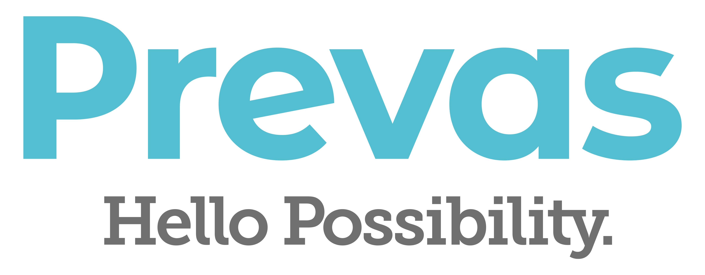
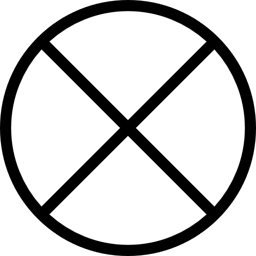
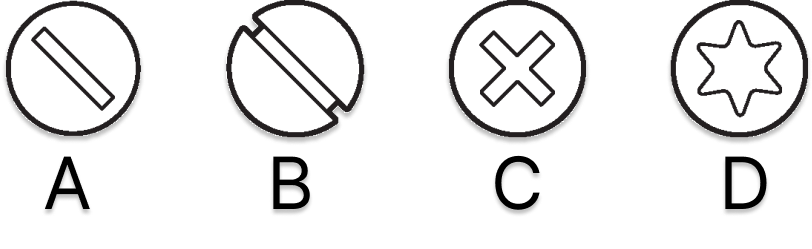
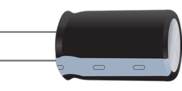

Namn
Email
Telefonnummer
Vilken linje studerar du?
Välj linje
Teknisk fysik
Teknisk fysik med materialvetenskap
System i teknik och samhälle
Molekylär bioteknik
Miljö- och vattenteknik
Kemiteknik
Informationsteknologi
Industriell ekonomi
Energisystem
Elektroteknik
Annan
Vilket år studerar du?
Välj år
År 1
År 2
År 3
År 4
År 5
Fråga 1: Vad är namnet på den välkända modellen som är speciellt framtagen för att testa och bedöma 3D-skrivares prestanda och förmåga? (
psst, du hittar en i montern
)
3DBenchy
3DBoaty
3DDucky
3DRocky
Fråga 2: Vilken elektrisk komponent symboliserar denna symbol?

Knapp
Skruvresistans
Glödlampa
Nödstopp
Fråga 3: Vilket alternativ är
inte
ett programmeringsspråk?
C++
C#
C-Shark
C
Fråga 4: Vilket alternativ är en "integer"?
9.2
17
"xyz"
π
Fråga 5: Vilket av följande skruvhuvuden heter Phillips?

A
B
C
D
Fråga 6: GMP är ett återkommande begrepp inom läkemedelsindustrin. Vad står förkortningen för?
Gross Margin Profit
Good Manufacturing Process
Good Manufacturing Practice
General Medical Procedure
Fråga 7: Nedan syns en kondensator, som karaktäriseras av sin kapacitans. Men i vilken enhet mäts kapacitans?

Henry
Farad
Ohm
Joule
Fråga 8: Cytiva är en en av Prevas största kunder i Uppsala. Cytiva jobbar mycket med en metod som renar fram specifika beståndsdelar (exempelvis protein eller antikroppar) från en lösning. Vad kallas metoden?
Kromatografi
Filtrering
Spektroskopi
Sublimation
Fråga 9: Vilken teknik används för att göra precisa genförändringar hos organismer? (
psst. Tekniken fick Nobelpriset i kemi 2020
)
RNA-sekvensering
GMO
CRISPR
PCR
Klar? Tryck nedan för att skicka in!
Skicka